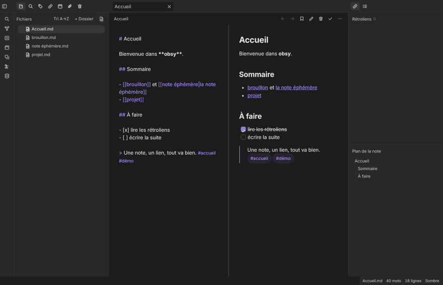
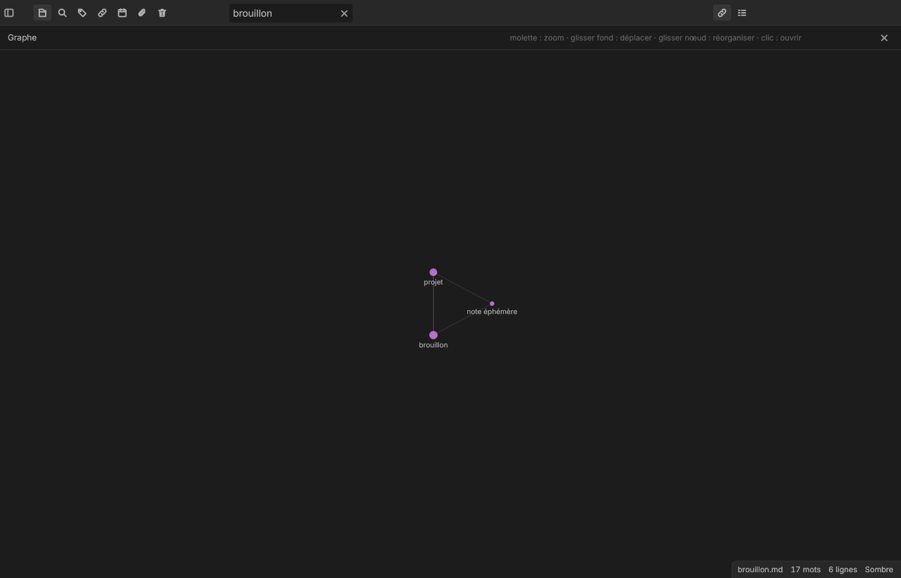

Vos notes Markdown, le graphe, les rétroliens. Sans le poids.

Mesuré, pas annoncé : mémoire au repos d'un processus complet, rendu logiciel, méthode publique et reproductible.
Sur un coffre de 5 000 notes, obsy reste sous 71 Mo, sans pic. Tous les détails et le protocole : docs/BENCHMARKS.md du dépôt.
Éditeur avec coloration de la source, wikilinks cliquables, propriétés YAML, tâches, tableaux, callouts, tags.
Sélecteur rapide (Ctrl+K), palette de commandes (Ctrl+P), recherche globale avec opérateurs, recherche dans la note (Ctrl+F).
Graphe interactif (zoom, déplacement, groupes colorés), rétroliens et liens sortants, plan de la note.
Multi-onglets, calendrier et notes quotidiennes, modèles, corbeille, thème clair et sombre.
Export PDF, publication en site statique, export du coffre. Le Markdown reste du Markdown.
Moteur HTTP local documenté, palette de greffons natifs, thèmes et extraits CSS du coffre.

Votre coffre est un dossier de fichiers Markdown. Aucun format fermé, aucune base de données, aucun service en ligne : ouvrez le même dossier avec un autre outil demain, il fonctionne.
obsy est écrit en Rust, du moteur d'indexation au rendu. Un seul processus, pas de navigateur embarqué, pas de runtime tiers. Réécriture indépendante : aucune ligne de code d'Obsidian.